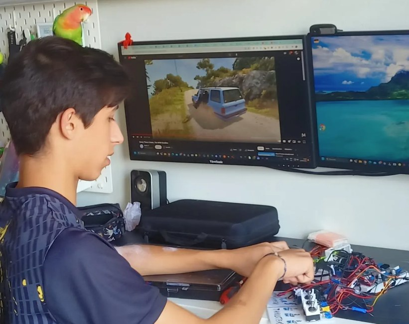
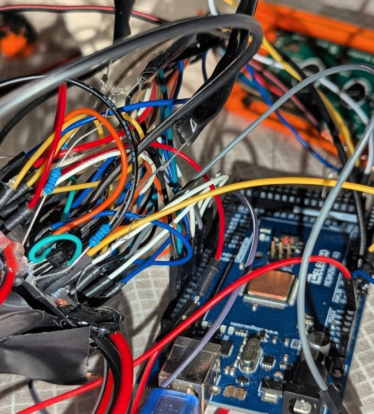
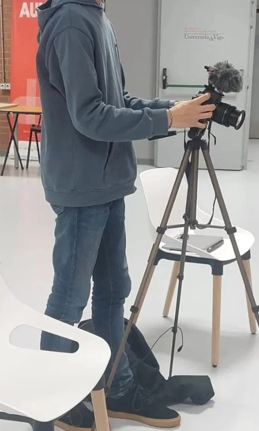
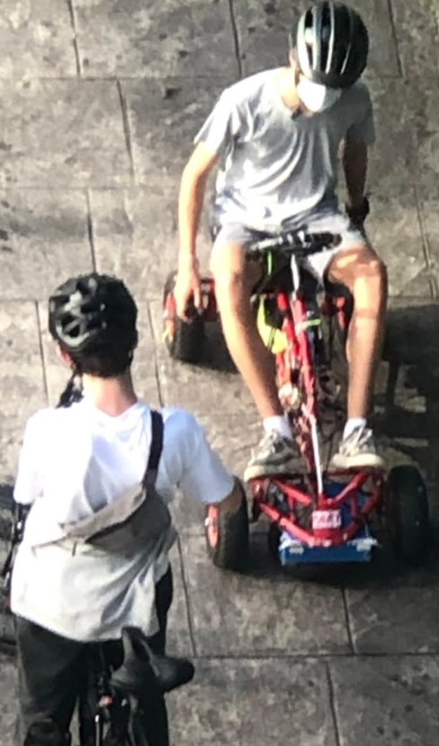
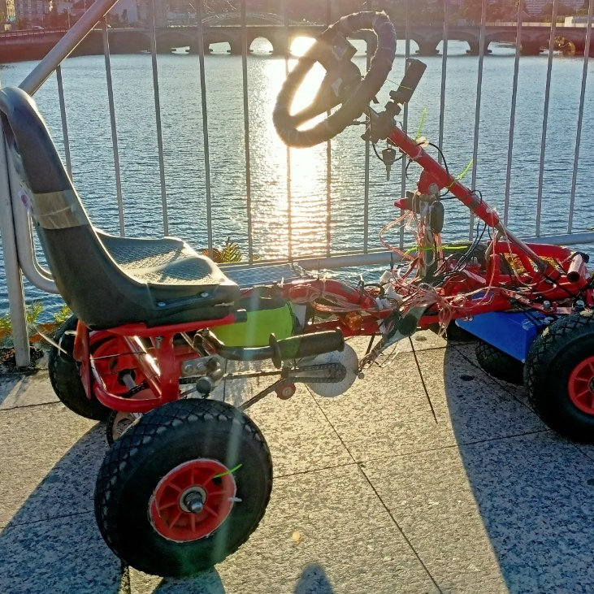
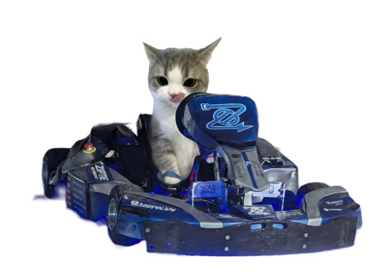

Aerospace Engineering · University of Vigo
Building fast things that run on electrons.
I design and build electric karts, electronics, ionic thrusters, speakers and model rockets. Started at 14 with a pedal kart, now leading Ziptie Motorsport.
Projects
Behind the build






Skills
CAD & electronicsOnshape, CATIA V5, Solidworks, Siemens NX, Altium, VESC Tool
Hardware & fabricationSoldering, spot welding, battery assembly, motor tuning, prototyping
ProgrammingPython, Arduino C/C++
LanguagesSpanish, Galician (native) · English C1 · French B2